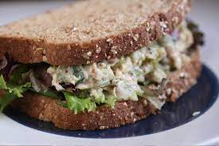

Tuna Salad Sandwich

Description
Simple tuna salad sandwich recipe that can be prepared in around 15 minutes
Ingredients
- 2 cans (6 oz each) tuna in water, drained
- 1/2 cup chopped celery
- 1/4 cup chopped onion
- 1/2 cup mayonaise or salad dressing
- 1 teaspoon salt
- 1/4 teaspoon pepper
- 8 slices bread
Directions
- In a medium bowl, mix the tuna, celery, onion, mayonaise, lempn juice, salt, and pepper.
- Spread tuna mixture on 4 bread slices. Top with remaining bread slices.
Recipe Source
Betty Crocker: Tuna Salad Sandwiches